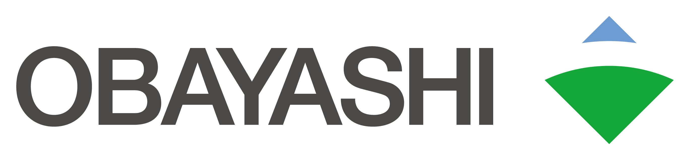

上位評価WB指標 件数
WB指標別 平均スコア
wB指標別キーワード
エリア比較
カテゴリごとにエリア別の平均スコアを比較します。（Top1〜20全ランク対象）
投稿一覧
投稿一覧
投稿位置マップ
キーワード共起ネットワーク
特異スコア検出
乖離度＝エリア平均−全体平均（Top1〜20全ランク対象）。行クリックで該当投稿を表示。
| エリア | 指標 | エリア平均 | 全体平均 | 乖離度 | 件数 |
|---|

カテゴリごとにエリア別の平均スコアを比較します。（Top1〜20全ランク対象）
乖離度＝エリア平均−全体平均（Top1〜20全ランク対象）。行クリックで該当投稿を表示。
| エリア | 指標 | エリア平均 | 全体平均 | 乖離度 | 件数 |
|---|